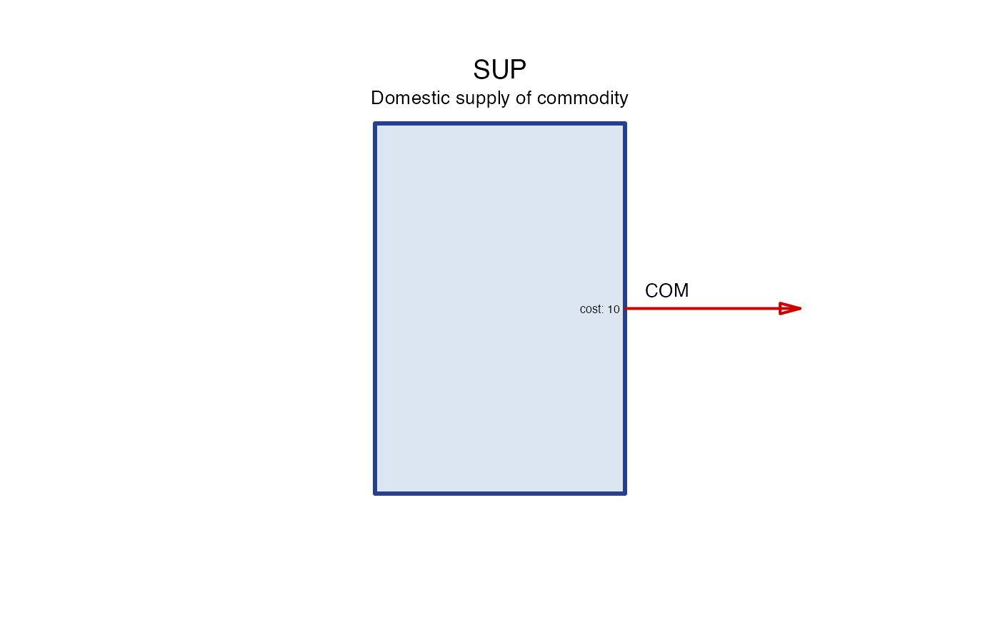
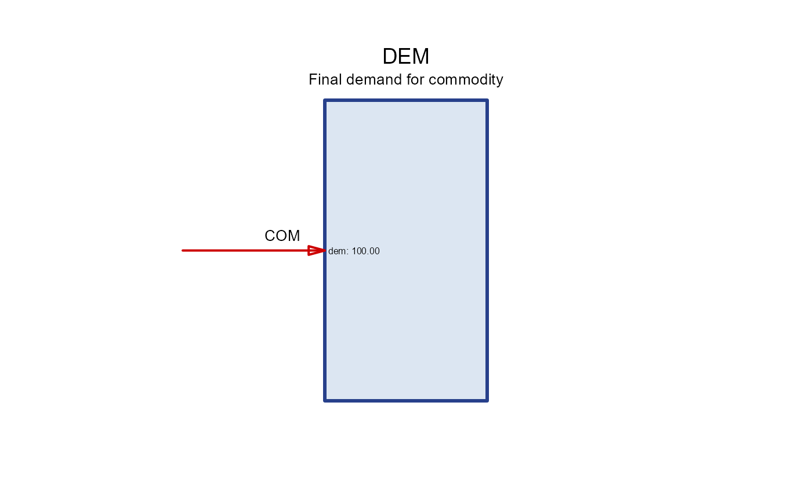

A minimal working example
An energy system model optimizes technological chains to meet a given
(exogenous) demand for a commodity (e.g. electricity, heat, etc.) using
given resources (e.g. fuels, renewable energy sources, etc.) and
available technological options (e.g. power plants, heat pumps, etc.).
The minimal model must have a definition of the final demand and
available resources.
Let’s start with the package settings and continue with the minimal
model definition.
Check which solver is set
my_solver <- get_default_solver()
print(my_solver)
#> $name
#> [1] "glpk"
#>
#> $lang
#> [1] "GLPK"(Optional) change default solver.
set_default_solver(solver_options$julia_highs)Check/set directory to store scenarios using the
set_scenarios_path and get_scenarios_path
functions.
get_scenarios_path()
#> [1] "scenarios/"The following minimal model consists of a commodity, a supply, and a
demand object.
The commodity object is defined using the newCommodity
constructor-function. The commodity object has a name and a
description.
# define a commodity
COM <- newCommodity("COM")The supply object is defined using the newSupply
constructor-function. The supply object has a name, a description, a
commodity it supplies, and availability data. The availability data is a
data frame with a time-series of costs or prices of the commodity.
# Declare a domestic supply (market) for the commodity
SUP <- newSupply(
name = "SUP",
desc = "Domestic supply of commodity",
commodity = "COM",
availability = data.frame(
cost = 10 # costs or prices of the commodity
)
)This simple supply object sets no physical limits on the availability
of the commodity. Only the price is set.
Schematic representation of the supply object shows an output arrow
with the name of the supply object and the commodity it supplies. No
inputs are required to “produce” the commodity in the model.
draw(SUP)
Demand is an opposite object to supply. It represents the final consumption of a commodity in the model.
DEM <- newDemand(
name = "DEM",
desc = "Final demand for commodity",
commodity = "COM",
dem = data.frame(
slice = "ANNUAL", # time-slices are defined in the calendar object
dem = 100
)
)
draw(DEM)
The minimal model can be built now from the created objects. There is
a commodity that is supplied and demanded. The commodity has a price,
and the demand is exogenously set. The optimization problem is quite
simple: minimize the costs of supplying the demand. No technological
alternatives are available yet in the model to choose from. No
constraints are set on resources.
Let’s create a model object and solve it. Several settings are
required to parameterize the model and create a model object:
- region - a name of a geographical region where the model
is defined.
- data - a repository object that stores all data objects
used in the model.
- calendar - a calendar object that defines the time
structure of the model.
- horizon - a horizon object that defines the time horizon
of the model.
- discount - a discount rate used to compute the present
value of costs in different time periods.
The repository object is created by combining all data objects used
in the model in all scenarios or a group of scenarios. Additional data
(model objects and settings) can be added to a particular
scenario.
# create a repository object to store the core model data
world_repo <- newRepository(name = "world_repo", COM, SUP, DEM)
# check content of the repository by type/class
summary(world_repo)
#> commodity demand supply
#> 1 1 1
# check names of the repository objects
names(world_repo)
#> [1] "COM" "SUP" "DEM"The calendar object defines the time structure of the model:
time-frames and time-slices. Time-frames are names of time periods that
include time-slices. Time-slices are minimal time units in a particular
time-frame. Time-frames have nested structure. The top level is a year,
with name ANNUAL. This is a default and if no sub-anual
resolutions are set, the simplest time structure.
hello_calendar <- newCalendar() # default calendar with no sub-annual resolutionsHorizon object defines the time horizon of the model. It is a
sequence of milestone years and periods for each milestone. The example
below defines a planning horizon from 2025 to 2050 with 5-year
intervals.
One-year horizon:
planning_2025 <- newHorizon(2025)
planning_2025
#> An object of class "horizon"
#> Slot "name":
#> character(0)
#>
#> Slot "desc":
#> character(0)
#>
#> Slot "period":
#> [1] 2025
#>
#> Slot "intervals":
#> start mid end
#> <int> <int> <int>
#> 1: 2025 2025 2025Multi-year horizon:
planning_horizon <- newHorizon(
period = 2025:2050,
intervals = rep(5, 10)
)
planning_horizon
#> An object of class "horizon"
#> Slot "name":
#> character(0)
#>
#> Slot "desc":
#> character(0)
#>
#> Slot "period":
#> [1] 2025 2026 2027 2028 2029 2030 2031 2032 2033 2034 2035 2036 2037 2038 2039
#> [16] 2040 2041 2042 2043 2044 2045 2046 2047 2048 2049 2050
#>
#> Slot "intervals":
#> start mid end
#> <num> <num> <num>
#> 1: 2025 2025 2025
#> 2: 2026 2027 2029
#> 3: 2030 2032 2034
#> 4: 2035 2037 2039
#> 5: 2040 2042 2044
#> 6: 2045 2047 2049
#> 7: 2050 2050 2050The newModel constructor-function combines all the
configuration and data objects to create a model object.
mod <- newModel(
name = "MODEL",
region = "WORLD",
data = world_repo,
calendar = hello_calendar,
horizon = planning_2025,
discount = 0.05
)
class(mod)
#> [1] "model"
#> attr(,"package")
#> [1] "energyRt"Once the model object is created, it can be solved using the
solve function. The solved (or interpolated) model object
becomes a scenario object.
# solve for one year
scen_2025 <- solve(mod, name = "HELLO_2025")
#> model: 'MODEL'
#> scenario: 'HELLO_2025'
#> path: scenarios/HELLO_2025_MODEL
#> inMemory: TRUE
#> Interpolating parameters
#> Repository 'world_repo'
#> Validating sets
#> Validating constraints
#> Repository 'world_repo'
#> Validating weather-sets
#> 1.67 sec elapsed
#> Solver directory: scenarios/HELLO_2025_MODEL/script/20241120003801UTC
#> Starting time: 2024-11-19 19:38:01
#> Solver directory: scenarios/HELLO_2025_MODEL/script/20241120003801UTC
#> Writing files: 0.16s
#> Starting GLPK
#> 0.03s
#> Reading solution: 0.03s
summary(scen_2025)
#> Scenario: HELLO_2025
#> desc:
#> Model: MODEL
#> Interpolated: TRUE
#> path: scenarios/HELLO_2025_MODEL
#> Solution status: optimal
#> vObjective: 1000
#> Size: 3.7 MbSolving for multiple years assumes the perferct foresight of the all
given data for the future. Since we haven’t defined any years for the
data, it is extrapolated by default for demand and supply objects.
# solve for multi-year horizon by adding the horizon object
scen_2050 <- solve(mod, name = "HELLO_WORLD",
calendar = planning_horizon)
#> model: 'MODEL'
#> scenario: 'HELLO_WORLD'
#> path: scenarios/HELLO_WORLD_MODEL
#> inMemory: TRUE
#> Interpolating parameters
#> Repository 'world_repo'
#> Validating sets
#> Validating constraints
#> Repository 'world_repo'
#> Validating weather-sets
#> 1.55 sec elapsed
#> Solver directory: scenarios/HELLO_WORLD_MODEL/script/20241120003803UTC
#> Starting time: 2024-11-19 19:38:03
#> Solver directory: scenarios/HELLO_WORLD_MODEL/script/20241120003803UTC
#> Writing files: 0.14s
#> Starting GLPK
#> 0.03s
#> Reading solution: 0.03s
summary(scen_2050)
#> Scenario: HELLO_WORLD
#> desc:
#> Model: MODEL
#> Interpolated: TRUE
#> path: scenarios/HELLO_WORLD_MODEL
#> Solution status: optimal
#> vObjective: 15151.75
#> Size: 3.7 Mbtbc…